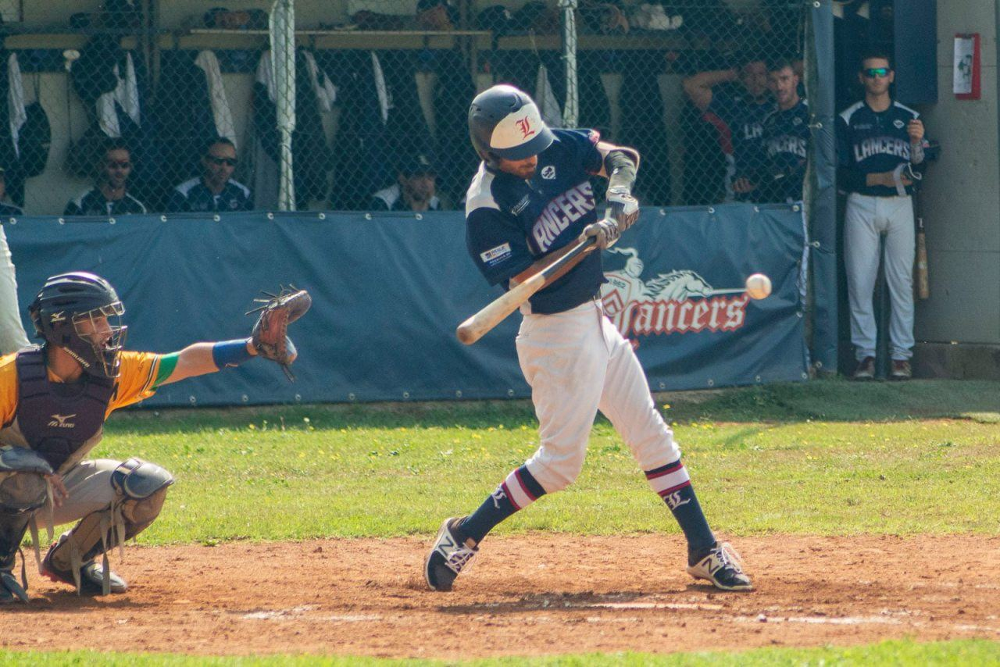
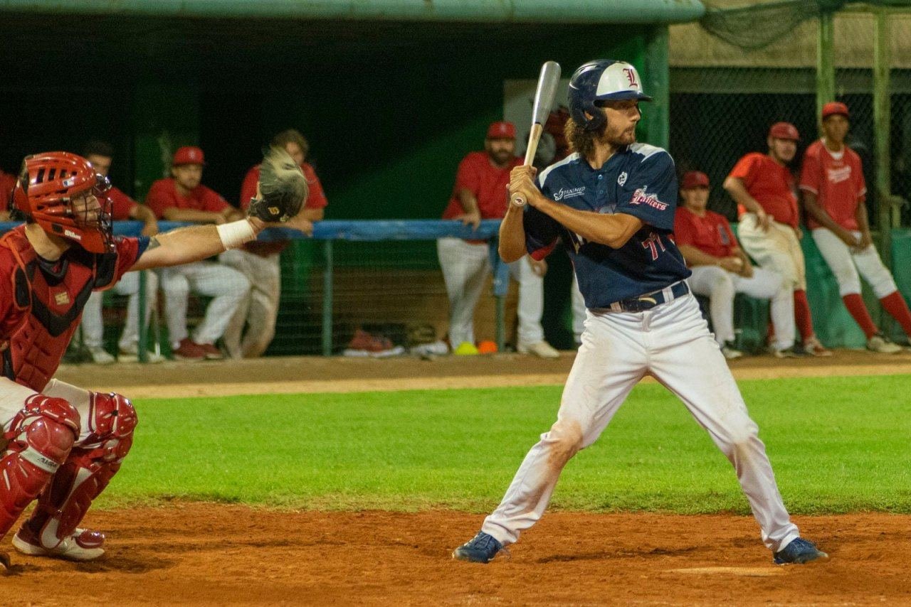

I Lancers Baseball proseguono il loro avvicinamento al prossimo campionato seguiti dallo staff tecnico intento a raccogliere tutte le informazioni utili per migliorare quei dettagli che in partita risulteranno fondamentali.
Nelle settimane scorse abbiamo annunciato l’arrivo, o meglio il ritorno, di Marcos Diaz che ricoprirà il ruolo di interbase affiancando così nel reparto interni il prima base Baratella, il catcher Becattini ed il capitano e terza base Parrini.
Oggi siamo felici di confermare altri nomi che nelle stagioni precedenti hanno indossato la casacca blu navy dei Lancieri; rimanendo nel reparto interni Arberim Rudaj sarà ancora il nostro seconda base e si appresta a disputare la quarta stagione sul diamante lastrigiano.
Siamo entusiasti di riabbracciare anche il giovane livornese Repetti, fuori quasi tutto il 2020 a causa di un brutto incidente stradale; Flavio è tornato a completa disposizione di Barbieri & C. e, grazie alla sua duttilità, potrà essere utilizzato come secondo catcher oppure all’occorrenza come esterno o seconda base.

Altro giovanissimo che ha confermato la volontà di giocare con noi è l’esterno, e astro nascente del baseball italiano, Maor Pasquini; il giocatore aretino di origini israeliane nel campionato scorso è risultato il miglior battitore con una media di .314 che gli è valsa la chiamata nel team Italia under18.
Una conferma importante che andrà ad affiancarsi ad un altro tassello del cosiddetto “zoccolo duro” lastrigiano Simone Geri, il nostro storico esterno sinistro.
Il compatto gruppo di lastrigiani quest’anno vedrà l’inserimento in pianta stabile di Manuele “Pantera” Margheri che dopo alcuni anni passati nella Serie C dei Lancieri con ottime prestazioni sul monte di lancio ha accettato l’invito dello staff tecnico per fare il salto in prima squadra; classe 1981, Manuele ha iniziato a calcare i diamanti nelle file del Quasar Firenze per abbracciare nel 1994 la causa Lancers.
Carattere forte ed estremamente competitivo, Manuele, sarà un utile braccio in più del bullpen Lancers già armato del ventottenne Degl’Innocenti e dei giovani Menoni e Ferrini.
Quest’ultimo, nelle scorse settimane ha subito un brutto infortunio che lo terrà fuori dal campo per diverse settimane; ad Alessandro la società e lo staff tecnico augura una pronta guarigione sperando di vederlo presto sul monte con la nostra bellissima casacca blu.